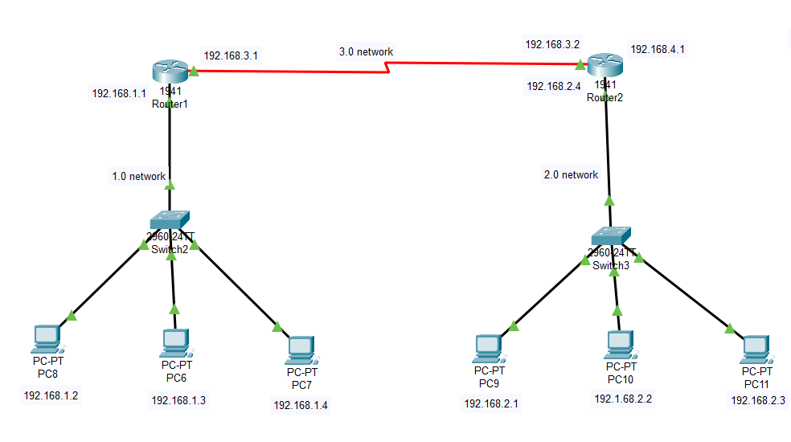
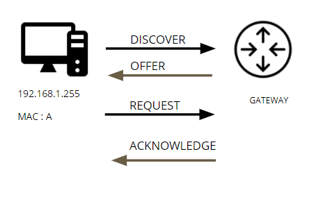

Routing
It is the process of making two routers communicate with each
Router has memory called as IP Table where it stores IP address.
Q. What kind of IP address?
A. Known NID and Unknown NID
Types of Routing:
1. Static Routing
Filling unknown NID in IP Table
Used in smaller network (e.g for 10-20 computers)
2. Dynamic Routing:
Filling known NID in IP Table
Used in larger network
STATIC ROUTING

DORA PROCESS
DORA is a process used by DHCP (Dynamic Host Configuration Protocol). Basically, DHCP is used for providing an automatic IP address to Hosts which want to connect to a network.
